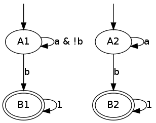

ltlcross
ltlcross is a tool for cross-comparing the output of LTL-to-Büchi
translators. It is actually a Spot-based clone of LBTT, the
LTL-to-Büchi Translator Testbench, that essentially performs the
same sanity checks.
The main differences are:
- support for PSL formulas in addition to LTL
- more statistics, especially:
- the number of logical transitions represented by each physical edge,
- the number of deterministic states and automata
- the number of SCCs with their various strengths (nonaccepting, terminal, weak, strong)
- the number of terminal, weak, and strong automata
- statistics output in a format that can be more easily be post-processed,
- more precise time measurement (LBTT was only precise to 1/100 of a second, reporting most times as "0.00s"),
- support for deterministic Rabin or Streett automata written in
ltl2dstar's format, - additional intersection checks with the complement of any deterministic automaton produced by a translator.
Although ltlcross performs the same sanity checks as LBTT, it does
not implement any of the interactive features of LBTT. In our almost
10-year usage of LBTT, we never had to use its interactive features to
understand bugs in our translation. Therefore ltlcross will report
problems, maybe with a conterexample, but you will be on your own to
investigate and fix them.
The core of ltlcross is a loop that does the following steps:
- Input a formula
- Translate the formula and its negation using each configured translator.
If there are 3 translators, the positive and negative translations
will be denoted
P0,N0,P1,N1,P2,N2. Optionally build complemented automata denotedComp(P0),Comp(N0), etc. - Perform sanity checks between all these automata to detect any problem.
- Build the products of these automata with a random state-space (the same
state-space for all translations). (If the
--products=Noption is given,Nproducts are performed instead.) - Gather statistics if requested.
Table of Contents
Formula selection
Formulas to translate should be specified using the common input options.
Standard input is read if no -f or -F option is given.
Configuring translators
Each translator should be specified as a string that use some of the following character sequences:
%f,%s,%l,%w the formula as a (quoted) string in Spot, Spin,
LBT, or Wring's syntax
%F,%S,%L,%W the formula as a file in Spot, Spin, LBT, or
Wring's syntax
%N,%T,%D the output automaton as a Never claim, in LBTT's
or in LTL2DSTAR's format
For instance here is how we could cross-compare the never claims
output by spin and ltl2tgba for the formulas GFa and X(a U b).
ltlcross -f 'GFa' -f 'X(a U b)' 'ltl2tgba -s %s >%N' 'spin -f %s >%N'
When ltlcross executes these commands, %s will be replaced
by the formula in Spin's syntax, and %N will be replaced by a
temporary file into which the output of the translator is redirected
before it is read back by ltlcross.
([](<>(a))) Running [P0]: ltl2tgba -s '([](<>(a)))' >'lcr-o0-h36rDO' Running [P1]: spin -f '([](<>(a)))' >'lcr-o1-L0XFNC' Running [N0]: ltl2tgba -s '(!([](<>(a))))' >'lcr-o0-hU7g4q' Running [N1]: spin -f '(!([](<>(a))))' >'lcr-o1-9mFZpf' Performing sanity checks and gathering statistics... (X((a) U (b))) Running [P0]: ltl2tgba -s '(X((a) U (b)))' >'lcr-o0-FuqKR3' Running [P1]: spin -f '(X((a) U (b)))' >'lcr-o1-s3H9nS' Running [N0]: ltl2tgba -s '(!(X((a) U (b))))' >'lcr-o0-TBPQUG' Running [N1]: spin -f '(!(X((a) U (b))))' >'lcr-o1-tZ1bwv' Performing sanity checks and gathering statistics... No problem detected.
ltlcross can only read three kinds of output:
- Never claims (only if they are restricted to representing an
automaton using
if,goto, andskipstatements) such as those output byspin,ltl2ba,ltl3ba, orltl2tgba --spin. These should be indicated using%N. The newer syntax introduced by Spin 6.24, usingdoinstead ofif, is also supported. - LBTT's format, which supports generalized Büchi automata with
either state-based acceptance or transition-based acceptance.
This output is used for instance by
lbt,modella, orltl2tgba --lbtt. These should be indicated using%T. ltl2dsar's format, which support deterministic Rabin or Streett automata. Afterltlcrossreads such input, it immediately convert it into a Büchi automaton. Rabin automata are converted to (degeneralized) Büchi automata and the conversion will preserve the determinism anytime a deterministic Büchi automaton exists for that property (this determinism is good for the complemented intersection check discussed below). Streett automata are converted to non-deterministic TGBA, where generalized acceptance conditions are used to reduce the size of the automaton you would get by the classical conversion from Streett to Büchi. This kind of output (Rabin or Streett) should be indicated with%D.
Of course all configured tools need not use the same % sequences.
The following list shows some typical configurations for some existing
tools:
- '
spin -f %s >%N' - '
ltl2ba -f %s >%N' - '
ltl3ba -S -f %s >%N' - '
ltl3ba -S -M -f %s >%N' (more deterministic output) - '
modella -r12 -g -e %L %T' - '
/path/to/script4lbtt.py %L %T' (script supplied by ltl2nba for its interface with LBTT) - '
ltl2tgba -s %s >%N' (smaller output, Büchi automaton) - '
ltl2tgba -s -D %s >%N' (more deterministic output, Büchi automaton) - '
ltl2tgba --lbtt %s >%T' (smaller output, TGBA) - '
ltl2tgba --lbtt -D %s >%T' (more deterministic output, TGBA) - '
lbt <%L >%T' - '
ltl2dstar --ltl2nba=spin:path/tp/ltl2tgba@-sD %L %D' (deterministic Rabin output) - '
ltl2dstar --automata=streett --ltl2nba=spin:path/tp/ltl2tgba@-sD %L %D' (deterministic Streett output) - '
ltl2dstar --ltl2nba=spin:path/tp/ltl2tgba@-sD %L - | dstar2tgba -s >%N' (external conversion from Rabin to Büchi done bydstar2tgbafor more reduction of the Büchi automaton than whatltlcrosswould provide) - '
java -jar Rabinizer.jar -ltl2dstar %F %D; mv %D.dst %D' (Rabinizer uses the last%Dargument as a prefix to which it always append.dst, so we have to rename%D.dstas%Dso thatltlcrosscan find the file) - '
ltl3dra -f %s >%D'
Getting statistics
Detailed statistics about the result of each translation, and the
product of that resulting automaton with the random state-space, can
be obtained using the --csv=FILE or --json=FILE option.
CSV or JSON output (or both!)
The following compare ltl2tgba, spin, and lbt on two random
formulas (where W and M operators have been rewritten away because
they are not supported by spin and lbt).
randltl -n 2 a b | ltlfilt --remove-wm | ltlcross --csv=results.csv \ 'ltl2tgba -s %f >%N' \ 'spin -f %s >%N' \ 'lbt < %L >%T'
-:1: (G(((p0) U ((p0) & (G(p1)))) R ((G(p1)) | ((p0) U ((p0) & (G(p1))))))) Running [P0]: ltl2tgba -s '(G(((p0) U ((p0) & (G(p1)))) R ((G(p1)) | ((p0) U ((p0) & (G(p1)))))))' >'lcr-o0-aLN6H6' Running [P1]: spin -f '([](((p0) U ((p0) && ([](p1)))) V (([](p1)) || ((p0) U ((p0) && ([](p1)))))))' >'lcr-o1-OOW9YV' Running [P2]: lbt < 'lcr-i0-ZYMsvh' >'lcr-o2-HrJfhL' Running [N0]: ltl2tgba -s '(!(G(((p0) U ((p0) & (G(p1)))) R ((G(p1)) | ((p0) U ((p0) & (G(p1))))))))' >'lcr-o0-H3L26q' Running [N1]: spin -f '(!([](((p0) U ((p0) && ([](p1)))) V (([](p1)) || ((p0) U ((p0) && ([](p1))))))))' >'lcr-o1-ENED8g' Running [N2]: lbt < 'lcr-i0-qDW8bB' >'lcr-o2-NJPId7' Performing sanity checks and gathering statistics... -:2: (!(p0)) | ((p1) -> (!(p1))) | (F(p2)) Running [P0]: ltl2tgba -s '(!(p0)) | ((p1) -> (!(p1))) | (F(p2))' >'lcr-o0-1f4SKR' Running [P1]: spin -f '(!(p0)) || (!(p1)) || (<>(p2))' >'lcr-o1-sBNl7J' Running [P2]: lbt < 'lcr-i1-cDCiuZ' >'lcr-o2-vVU8tC' Running [N0]: ltl2tgba -s '(!((!(p0)) | ((p1) -> (!(p1))) | (F(p2))))' >'lcr-o0-Rnhzen' Running [N1]: spin -f '(!((!(p0)) || (!(p1)) || (<>(p2))))' >'lcr-o1-i7z5Ff' Running [N2]: lbt < 'lcr-i1-gQTlRu' >'lcr-o2-9FuW77' Performing sanity checks and gathering statistics... No problem detected.
After this execution, the file results.csv contains the following:
"formula","tool","exit_status","exit_code","time","states","edges","transitions","acc","scc","nonacc_scc","terminal_scc","weak_scc","strong_scc","nondet_states","nondet_aut","terminal_aut","weak_aut","strong_aut","product_states","product_transitions","product_scc" "(G(((p0) U ((p0) & (G(p1)))) R ((G(p1)) | ((p0) U ((p0) & (G(p1)))))))","ltl2tgba -s %f >%N","ok",0,0.0292363,3,5,9,1,3,2,0,1,0,2,1,0,1,0,401,5168,3 "(G(((p0) U ((p0) & (G(p1)))) R ((G(p1)) | ((p0) U ((p0) & (G(p1)))))))","spin -f %s >%N","ok",0,0.00671565,6,13,18,1,3,2,0,0,1,6,1,0,0,1,999,14414,5 "(G(((p0) U ((p0) & (G(p1)))) R ((G(p1)) | ((p0) U ((p0) & (G(p1)))))))","lbt < %L >%T","ok",0,0.260393,8,41,51,1,3,2,0,0,1,8,1,0,0,1,1397,43175,5 "(!(G(((p0) U ((p0) & (G(p1)))) R ((G(p1)) | ((p0) U ((p0) & (G(p1))))))))","ltl2tgba -s %f >%N","ok",0,0.0445421,4,10,16,1,3,1,1,0,1,0,0,0,0,1,797,16411,3 "(!(G(((p0) U ((p0) & (G(p1)))) R ((G(p1)) | ((p0) U ((p0) & (G(p1))))))))","spin -f %s >%N","ok",0,0.0228213,7,24,63,1,4,2,1,0,1,6,1,0,0,1,1400,64822,4 "(!(G(((p0) U ((p0) & (G(p1)))) R ((G(p1)) | ((p0) U ((p0) & (G(p1))))))))","lbt < %L >%T","ok",0,0.00435242,39,286,614,3,28,26,1,0,1,33,1,0,0,1,7583,600472,4394 "(!(p0)) | ((p1) -> (!(p1))) | (F(p2))","ltl2tgba -s %f >%N","ok",0,0.0390749,3,5,24,1,3,2,1,0,0,0,0,1,0,0,401,8029,3 "(!(p0)) | ((p1) -> (!(p1))) | (F(p2))","spin -f %s >%N","ok",0,0.0018992,3,5,35,1,3,2,1,0,0,2,1,1,0,0,401,9983,3 "(!(p0)) | ((p1) -> (!(p1))) | (F(p2))","lbt < %L >%T","ok",0,0.00233017,8,13,84,1,8,7,1,0,0,3,1,1,0,0,633,14659,235 "(!((!(p0)) | ((p1) -> (!(p1))) | (F(p2))))","ltl2tgba -s %f >%N","ok",0,0.0286798,2,2,5,1,2,1,0,1,0,0,0,0,1,0,201,2067,2 "(!((!(p0)) | ((p1) -> (!(p1))) | (F(p2))))","spin -f %s >%N","ok",0,0.00191626,2,2,5,1,2,1,0,1,0,0,0,0,1,0,201,2067,2 "(!((!(p0)) | ((p1) -> (!(p1))) | (F(p2))))","lbt < %L >%T","ok",0,0.00317898,3,3,9,0,3,2,0,1,0,0,0,0,1,0,202,2078,3
This file can be loaded in any spreadsheet or statistical application.
Although we only supplied 2 random generated formulas, the output
contains 4 formulas because ltlcross had to translate the positive
and negative version of each.
If we had used the option --json=results.json instead of (or in
addition to) --cvs=results.csv, the file results.json would have
contained the following JSON output.
{
"tool": [
"ltl2tgba -s %f >%N",
"spin -f %s >%N",
"lbt < %L >%T"
],
"formula": [
"(G(((p0) U ((p0) & (G(p1)))) R ((G(p1)) | ((p0) U ((p0) & (G(p1)))))))",
"(!(G(((p0) U ((p0) & (G(p1)))) R ((G(p1)) | ((p0) U ((p0) & (G(p1))))))))",
"(!(p0)) | ((p1) -> (!(p1))) | (F(p2))",
"(!((!(p0)) | ((p1) -> (!(p1))) | (F(p2))))"
],
"fields": [
"formula","tool","exit_status","exit_code","time","states","edges","transitions","acc","scc","nonacc_scc","terminal_scc","weak_scc","strong_scc","nondet_states","nondet_aut","terminal_aut","weak_aut","strong_aut","product_states","product_transitions","product_scc"
],
"inputs": [ 0, 1 ],
"results": [
[ 0,0,"ok",0,0.0292363,3,5,9,1,3,2,0,1,0,2,1,0,1,0,401,5168,3 ],
[ 0,1,"ok",0,0.00671565,6,13,18,1,3,2,0,0,1,6,1,0,0,1,999,14414,5 ],
[ 0,2,"ok",0,0.260393,8,41,51,1,3,2,0,0,1,8,1,0,0,1,1397,43175,5 ],
[ 1,0,"ok",0,0.0445421,4,10,16,1,3,1,1,0,1,0,0,0,0,1,797,16411,3 ],
[ 1,1,"ok",0,0.0228213,7,24,63,1,4,2,1,0,1,6,1,0,0,1,1400,64822,4 ],
[ 1,2,"ok",0,0.00435242,39,286,614,3,28,26,1,0,1,33,1,0,0,1,7583,600472,4394 ],
[ 2,0,"ok",0,0.0390749,3,5,24,1,3,2,1,0,0,0,0,1,0,0,401,8029,3 ],
[ 2,1,"ok",0,0.0018992,3,5,35,1,3,2,1,0,0,2,1,1,0,0,401,9983,3 ],
[ 2,2,"ok",0,0.00233017,8,13,84,1,8,7,1,0,0,3,1,1,0,0,633,14659,235 ],
[ 3,0,"ok",0,0.0286798,2,2,5,1,2,1,0,1,0,0,0,0,1,0,201,2067,2 ],
[ 3,1,"ok",0,0.00191626,2,2,5,1,2,1,0,1,0,0,0,0,1,0,201,2067,2 ],
[ 3,2,"ok",0,0.00317898,3,3,9,0,3,2,0,1,0,0,0,0,1,0,202,2078,3 ]
]
}
Here the fields table describes the columns of the results table.
The inputs tables lists the columns that are considered as inputs
for the experiments. The values in the columns corresponding to the
fields formula and tool contains indices relative to the formula
and tool tables. This format is more compact when dealing with lots
of translators and formulas, because they don't have to be repeated on
each line as in the CSV version.
JSON data can be easily processed in any language. For instance the
following Python3 script averages each column (except the first four)
for each tool, and presents the results in a form that can almost be
copied into a LaTeX table (the % in the tool names have to be taken
care of). Note that for simplicity we assume that the first two
columns are inputs, instead of reading the inputs field.
#!/usr/bin/python3 import json data = json.load(open('results.json')) datacols = range(4, len(data["fields"])) # Index results by tool results = { t:[] for t in range(0, len(data["tool"])) } for l in data["results"]: results[l[1]].append(l) # Average columns for each tool, and display them as a table print("%-18s & count & %s \\\\" % ("tool", " & ".join(data["fields"][4:]))) for i in range(0, len(data["tool"])): c = len(results[i]) sums = ["%6.1f" % (sum([x[j] for x in results[i]])/c) for j in datacols] print("%-18s & %3d & %s \\\\" % (data["tool"][i], c, " & ".join(sums)))
tool & count & time & states & edges & transitions & acc & scc & nonacc_scc & terminal_scc & weak_scc & strong_scc & nondet_states & nondet_aut & terminal_aut & weak_aut & strong_aut & product_states & product_transitions & product_scc \\ ltl2tgba -s %f >%N & 4 & 0.0 & 3.0 & 5.5 & 13.5 & 1.0 & 2.8 & 1.5 & 0.5 & 0.5 & 0.2 & 0.5 & 0.2 & 0.2 & 0.5 & 0.2 & 450.0 & 7918.8 & 2.8 \\ spin -f %s >%N & 4 & 0.0 & 4.5 & 11.0 & 30.2 & 1.0 & 3.0 & 1.8 & 0.5 & 0.2 & 0.5 & 3.5 & 0.8 & 0.2 & 0.2 & 0.5 & 750.2 & 22821.5 & 3.5 \\ lbt < %L >%T & 4 & 0.1 & 14.5 & 85.8 & 189.5 & 1.2 & 10.5 & 9.2 & 0.5 & 0.2 & 0.5 & 11.0 & 0.8 & 0.2 & 0.2 & 0.5 & 2453.8 & 165096.0 & 1159.2 \\
The script bench/ltl2tgba/sum.py is a more evolved version of the
above script that generates two kinds of LaTeX tables.
When computing such statistics, you should be aware that inputs for
which a tool failed to generate an automaton (e.g. it crashed, or it
was killed if you used ltlcross's --timeout option to limit run
time) will appear as mostly empty lines in the CSV or JSON files,
since most statistics cannot be computed without an automaton…
Those lines with missing data can be omitted with the --omit-missing
option (this used to be the default up to Spot 1.2).
However data for bogus automata are still included: as shown below
ltlcross will report inconsistencies between automata as errors, but
it does not try to guess who is incorrect.
Description of the columns
formula and tool contain the formula translated and the command
run to translate it. In the CSV, these columns contain the actual
text. In the JSON output, these column contains an index into the
formula and tool table declared separately.
exit_status and exit_code are used to indicate if the translator
successfully produced an automaton, or if it failed. On successful
translation, exit_status is equal to "ok" and exit_code is 0.
If the translation took more time than allowed with the --timeout
option, exit_status will contain "timeout" and exit_code will be
set to -1. Other values are used to diagnose various issues: please
check the man-page for ltlcross for a list of them.
time obviously contains the time used by the translation. Time is
measured with some high-resolution clock when available (that's
nanosecond accuracy under Linux), but because translator commands are
executed through a shell, it also includes the time to start a shell.
(This extra cost apply identically to all translators, so it is not unfair.)
All the values that follow will be missing if exit_status is not
equal to "ok". (You may instruct ltlcross not to output lines with
such missing data with the option --omit-missing.)
The columns in_type, in_states, in_edges, in_transitions,
in_acc, and in_scc are only output if one of the translator
produces Rabin or Streett automata (i.e., if %D is used to specify
one output filename for any translator). In that case these columns
give the type (DRA or DSA) of the produced automaton, as well as its
size (states, edges, transitions, number of acceptance pairs, and
number of SCCs). This input automaton is then converted by ltlcross
into a TGBA before being checked the result of other translators, and
all the following columns are measures of that converted automaton.
(Aside from parsing them and converting them to TGBA, Spot has no support
for Rabin automata and Streett automata.)
states, edges, transitions, acc are size measures for the
automaton that was translated. acc counts the number of acceptance
sets. When building (degeneralized) Büchi automata, it will always be
1, so its value is meaningful only when evaluating translations to
generalized Büchi automata. edges counts the actual number of edges
in the graph supporting the automaton; an edge (labeled by a Boolean
formula) might actually represent several transitions (each labeled by
assignment of all atomic propositions). For instance in an automaton
where the atomic proposition are \(a\) and \(b\), one edge labeled by
\(a\lor b\) actually represents three transitions \(a b\), \(a\bar b\), and
\(\bar a b\).
The following picture displays two automata for the LTL formula a U b. They both have 2 states and 3 edges, however they differ in the
number of transitions (7 versus 8), because the initial self-loop is
more constrained in the first automaton. A smaller number of
transition is therefore an indication of a more constrained automaton.

scc counts the number of strongly-connected components in the automaton. These SCCs are
also partitioned on four sets based on their strengths:
nonacc_sccfor non-accepting SCCs (such as states A1 and A2 in the previous picture)terminal_sccfor SCCs that consist of a single state with an accepting self-loop labeled by true (such as states B1 and B2 in the previous picture)weak_sccfor non-terminal SCCs in which all cycles are accepting- and
strong_sccfor accepting SCCs in which some cycles are not accepting.
These SCC strengths can be used to compute the strength of the automaton as a whole:
- an automaton is terminal if it contains only non-accepting or terminal SCCs,
- an automaton is weak if it it contains only non-accepting, terminal, or weak SCCs,
- an automaton is strong if it contains at least one strong SCC.
This classification is used to fill the terminal_aut, weak_aut,
strong_aut columns with Boolean values. Only one of these should
contain 1. We usually prefer terminal automata over weak automata,
and weak automata over strong automata, because the emptiness check
of terminal (and weak) automata is easier.
nondetstates counts the number of non-deterministic states in the
automaton. nondeterministic is a Boolean value indicating if the
automaton is not deterministic. For instance in the previous picture
showing two automata for a U b, the first automaton is deterministic
(these two fields will contain 0), while the second automaton contain
a nondeterministic state (state A2 has two possible successors for the
assignment \(ab\)) and is therefore not deterministic.
Finally, product_states, product_transitions, and product_scc
count the number of state, transitions and strongly-connect components
in the product that has been built between the translated automaton
and a random model. For a given formula, the same random model is of
course used against the automata translated by all tools. Comparing
the size of these product might give another indication of the
"conciseness" of a translated automaton.
There is of course a certain "luck factor" in the size of the product.
Maybe some translator built a very dumb automaton, with many useless
states, in which just a very tiny part is translated concisely. By
luck, the random model generated might synchronize with this tiny part
only, and ignore the part with all the useless states. A way to
lessen this luck factor is to increase the number of products
performed against the translated automaton. If option --products=N
is used, N products are builds instead of one, and the fields
product_states, product_transitions, and product_scc contain
average values.
If the option --products=+N is used (with a + in front of the
number), then no average value is computed. Instead, three columns
product_states, product_transitions, and product_scc are output
for each individual product (i.e., \(3\times N\) columns are output).
This might be useful if you want to compute different kind of
statistic (e.g., a median instead of a mean) or if you want to build
scatter plots of all these products.
Changing the name of the translators
By default, the names used in the CSV and JSON output to designate the translators are the command specified on the command line.
For instance in the following, ltl2tgba is run in two
configurations, and the strings ltl2tgba -s --small %f >%N and
ltl2tgba -s --deter %f >%N appear verbatim in the output:
ltlcross -f a -f Ga 'ltl2tgba -s --small %f >%N' 'ltl2tgba -s --deter %f >%N' --csv
"formula","tool","exit_status","exit_code","time","states","edges","transitions","acc","scc","nonacc_scc","terminal_scc","weak_scc","strong_scc","nondet_states","nondet_aut","terminal_aut","weak_aut","strong_aut","product_states","product_transitions","product_scc" "(a)","ltl2tgba -s --small %f >%N","ok",0,0.0361914,2,2,3,1,2,1,1,0,0,0,0,1,0,0,201,4092,2 "(a)","ltl2tgba -s --deter %f >%N","ok",0,0.0310513,2,2,3,1,2,1,1,0,0,0,0,1,0,0,201,4092,2 "(!(a))","ltl2tgba -s --small %f >%N","ok",0,0.0355644,2,2,3,1,2,1,1,0,0,0,0,1,0,0,201,4098,2 "(!(a))","ltl2tgba -s --deter %f >%N","ok",0,0.0286283,2,2,3,1,2,1,1,0,0,0,0,1,0,0,201,4098,2 "(G(a))","ltl2tgba -s --small %f >%N","ok",0,0.0308319,1,1,1,1,1,0,0,1,0,0,0,0,1,0,200,2023,1 "(G(a))","ltl2tgba -s --deter %f >%N","ok",0,0.0264577,1,1,1,1,1,0,0,1,0,0,0,0,1,0,200,2023,1 "(!(G(a)))","ltl2tgba -s --small %f >%N","ok",0,0.0371777,2,3,4,1,2,1,1,0,0,0,0,1,0,0,400,8166,2 "(!(G(a)))","ltl2tgba -s --deter %f >%N","ok",0,0.035956,2,3,4,1,2,1,1,0,0,0,0,1,0,0,400,8166,2
To present these results graphically, or even when analyzing these
data, it might be convenient to give each configured tool a shorter
name. ltlcross supports the specification of such short names by
looking whether the command specification for a translator has the
form "{short name}actual command".
For instance:
ltlcross -f a -f Ga '{small} ltl2tgba -s --small %f >%N' '{deter} ltl2tgba -s --deter %f >%N' --csv
"formula","tool","exit_status","exit_code","time","states","edges","transitions","acc","scc","nonacc_scc","terminal_scc","weak_scc","strong_scc","nondet_states","nondet_aut","terminal_aut","weak_aut","strong_aut","product_states","product_transitions","product_scc" "(a)","small","ok",0,0.0372669,2,2,3,1,2,1,1,0,0,0,0,1,0,0,201,4092,2 "(a)","deter","ok",0,0.0333373,2,2,3,1,2,1,1,0,0,0,0,1,0,0,201,4092,2 "(!(a))","small","ok",0,0.0313834,2,2,3,1,2,1,1,0,0,0,0,1,0,0,201,4098,2 "(!(a))","deter","ok",0,0.031681,2,2,3,1,2,1,1,0,0,0,0,1,0,0,201,4098,2 "(G(a))","small","ok",0,0.0317352,1,1,1,1,1,0,0,1,0,0,0,0,1,0,200,2023,1 "(G(a))","deter","ok",0,0.0281772,1,1,1,1,1,0,0,1,0,0,0,0,1,0,200,2023,1 "(!(G(a)))","small","ok",0,0.0273178,2,3,4,1,2,1,1,0,0,0,0,1,0,0,400,8166,2 "(!(G(a)))","deter","ok",0,0.0231561,2,3,4,1,2,1,1,0,0,0,0,1,0,0,400,8166,2
Detecting problems
If a translator exits with a non-zero status code, or fails to output
an automaton ltlcross can read, and error will be displayed and the
result of the translation will be discarded.
Otherwise ltlcross performs the following checks on all translated
formulas (\(P_i\) and \(N_i\) designate respectively the translation of
positive and negative formulas by the ith translator).
- Intersection check: \(P_i\otimes N_j\) must be empty for all
pairs of \((i,j)\).
A single failing translator might generate a lot of lines of the form:
error: P0*N1 is nonempty; both automata accept the infinite word cycle{p0 & !p1} error: P1*N0 is nonempty; both automata accept the infinite word p0; !p1; cycle{p0 & p1} error: P1*N1 is nonempty; both automata accept the infinite word p0; cycle{!p1 & !p0} error: P1*N2 is nonempty; both automata accept the infinite word p0; !p1; cycle{p0 & p1} error: P1*N3 is nonempty; both automata accept the infinite word p0; !p1; cycle{p0 & p1} error: P1*N4 is nonempty; both automata accept the infinite word p0; cycle{!p1 & !p0} error: P2*N1 is nonempty; both automata accept the infinite word p0; !p1; !p0; cycle{!p1 & !p0; p0 & !p1; !p1; !p1; p0 & !p1} error: P3*N1 is nonempty; both automata accept the infinite word p0; !p1; !p1 & !p0; cycle{p0 & !p1} error: P4*N1 is nonempty; both automata accept the infinite word p0; !p1; !p1 & !p0; cycle{p0 & !p1}In this example, translator number
1looks clearly faulty (at least the other 4 translators do not contradict each other).Examples of infinite words that are accepted by both automata always have the form of a lasso: a (possibly empty) finite prefix followed by a cycle that should be repeated infinitely often. The cycle part is denoted by
cycle{...}. - Complemented intersection check. If \(P_i\) and \(P_j\) are
deterministic, we
ltlcrossbuilds their complements, \(Comp(P_i)\) and \(Comp(P_j)\), and then ensures that \(Comp(P_i)\otimes Comp(P_j)\) is empty. If only one of them is deterministic, for instance \(P_i\), we check that \(P_j\otimes Comp(P_i)\) for all \(j \ne i\); likewise if it's \(N_i\) that is deterministic.This check is only done for deterministic automata, because complementation is cheap is that case. When validating a translator with
ltlcross, we highly recommend to include a translator with good deterministic output to augment test coverage. Using 'ltl2tgba -lD %f >%T' will produce deterministic automata for all obligation properties and many recurrence properties. Using 'ltl2dstar --ltl2nba=spin:pathto/ltl2tgba@-sD %L %D' is more expansive, but it will produce a deterministic Büchi automaton whenever one exists. - Cross-comparison checks: for some state-space \(S\),
all \(P_i\otimes S\) are either all empty, or all non-empty.
Similarly all \(N_i\otimes S\) are either all empty, or all non-empty.
A cross-comparison failure could be displayed as:
error: {P0,P2,P3,P4,P5,P6,P7,P8,P9} disagree with {P1} when evaluating the state-spaceIf
--products=Nis used withNgreater than one, the number of the state-space is also printed. This number is of no use by itself, except to explain why you may get multiple disagreement between the same sets of automata. - Consistency check:
For each \(i\), the products \(P_i\otimes S\) and \(N_i\otimes S\) actually cover all states of \(S\). Because \(S\) does not have any deadlock, any of its infinite path must be accepted by \(P_i\) or \(N_i\) (or both).
An error in that case is displayed as
error: inconsistency between P1 and N1
If
--products=Nis used withNgreater than one, the number of the state-space in which the inconsistency was detected is also printed.
The above checks are similar to those that are performed by LBTT,
except for the complemented intersection check, which is only done in
ltlcross.
If any problem was reported during the translation of one of the
formulas, ltlcheck will exit with an exit status of 1. Statistics
(if requested) are output nonetheless, and include any faulty
automaton as well.
Miscellaneous options
--stop-on-error
The --stop-on-error option will cause ltlcross to abort on the
first detected error. This include failure to start some translator,
read its output, or failure to passe the sanity checks. Timeouts are
allowed.
One use for this option is when ltlcross is used in combination with
randltl to check translators on an infinite stream of formulas.
For instance the following will cross-compare ltl2tgba against
ltl3ba until it finds an error, or your interrupt the command, or it
runs out of memory (the hash tables used by randltl and ltlcross
to remove duplicate formulas will keep growing).
randltl -n -1 --tree-size 10..25 a b c | ltlcross --stop-on-error 'ltl2tgba --lbtt %f >%T' 'ltl3ba -f %s >%N'
--save-bogus=FILENAME
The --save-bogus=FILENAME will save any formula for which an error
was detected (either some translation failed, or some problem was
detected using the resulting automata) in FILENAME. Again, timeouts
are not considered to be errors, and therefore not reported in this
file.
The main use for this feature is in conjunction with randltl's
generation of random formulas. For instance the following command
will run the translators on an infinite number of formulas, saving
any problematic formula in bugs.ltl.
randltl -n -1 --tree-size 10..25 a b c | ltlcross --save-bogus=bugs.ltl 'ltl2tgba --lbtt %f >%T' 'ltl3ba -f %s >%N'
You can periodically check the contents of bugs.ltl, and then run
ltlcross only on those formulas to look at the problems:
ltlcross -F bugs.ltl 'ltl2tgba --lbtt %f >%T' 'ltl3ba -f %s >%N'
--no-check
The --no-check option disables all sanity checks, and only use the supplied
formulas in their positive form.
When checks are enabled, the negated formulas are intermixed with the
positives ones in the results. Therefore the --no-check option can
be used to gather statistics about a specific set of formulas.